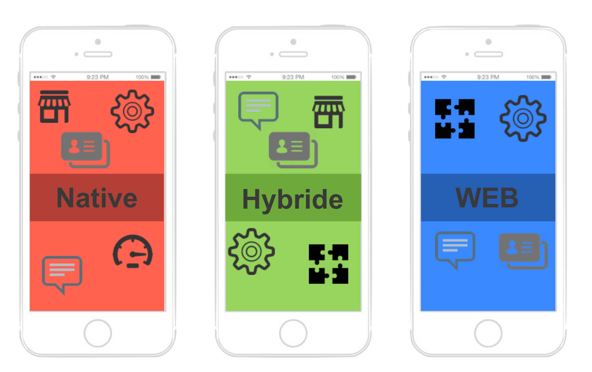

The Web
Progressive webApp (PWA)
Hybride progressive webApp (PWA) is om tijd en geld te besparen de R&D-trend richting native hybride Apps met tooling combinaties en daarbovenop wrapper die ontwikkelde App bundelt en “een OS-versie genereert”.
→ zie:
Wikipedia PWA
PWA cross platform
Progressive webApps zijn ontworpen om te werken in elke browser die voldoet aan webstandaarden. Als gevolg hiervan kunnen ontwikkelaars gemakkelijker platform onafhankelijke Apps bouwen dan met native Apps.
- The characteristics of a PWA
-
→ Originate from a secure origin. Served over TLS and green padlock displays, no active mixed content → Load while offline even if only a custom offline page
→ Reference a webApp with four key properties: name, short_name, start_url, and display with value standalone or fullscreen
→ An icon at least 144×144 large in png format - Technical baseline criteria to be considered a PWA
-
There may be many layers between the hardware and end user. Each can be spoken of as having a front end and a back end. The front is an abstraction, simplifying the underlying component by providing a user-friendly interface, while the back usually handles business logic and data storage
- PWA wrapper tooling trend